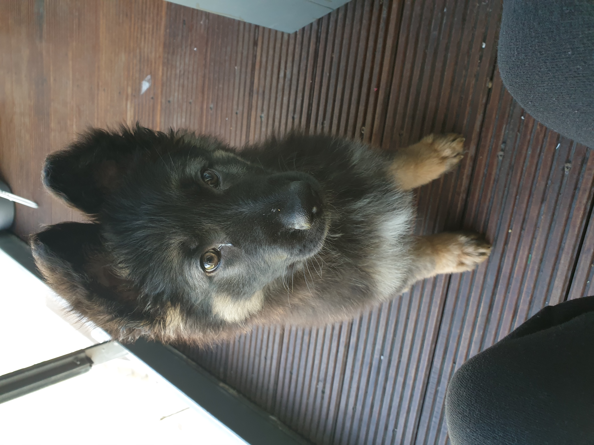
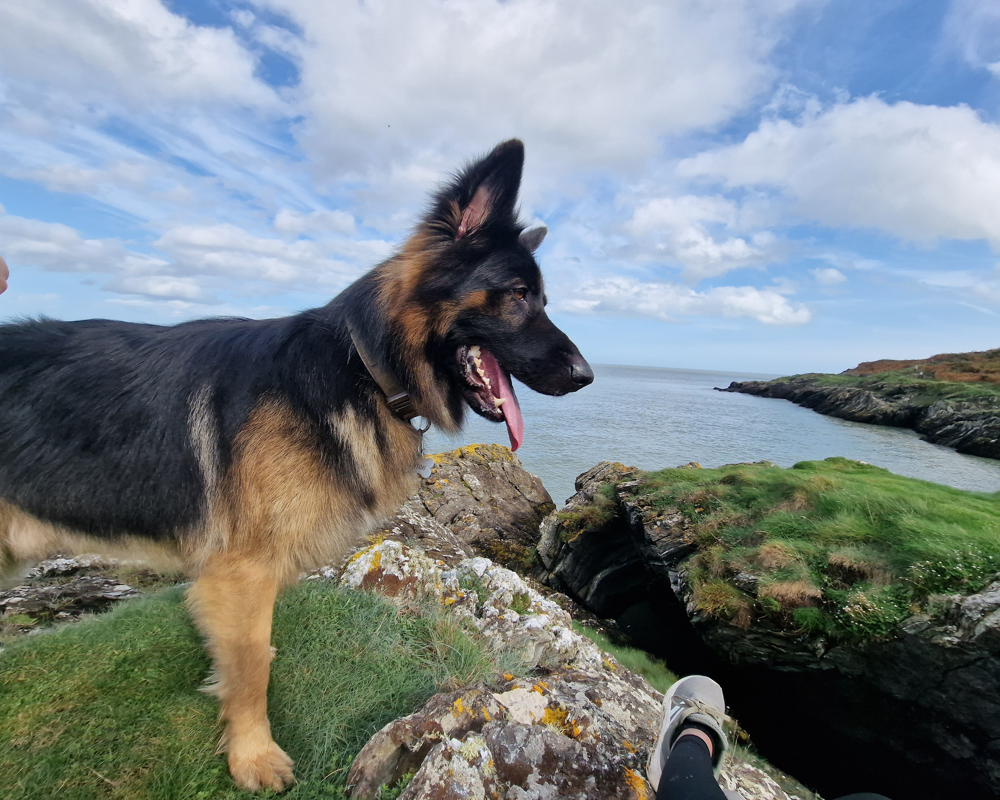

Early Life

Three years ago, on a bright march afternoon me and my wife set our journey from Dublin to a
countryside home in Kildare.
If you are wondering why, that’s the day we made Tyson our baby.
Throughout our drive we were trying to find a name for him. We thought of lot of names,
but we were so confused, kind of not happy with any name for our first ever baby.
Anyways after a long drive through the country roads we pulled into this beautiful bungalow.
As we came out of the car here comes a gorgeous long haired German Sheperd.
He is so huge and majestic like a lion, and first thing he did is he jumped on me.
Now you know where Tyson got his jumping habits from. Yes, he was Tyson’s biological father and
the father’s name is Tyson.
So here we go. Problem sorted! We decided to name our baby Tyson
after his biological father,
and we came up with the name Tyson Jnr. though, we ended up calling him Tyson Gelashvili at the
end.
We also met Mary, his biological mum a short haired German Shepherd and walked towards the horse
shed,
said hi to the two beautiful horses. That’s when we saw the little guy coming to us from the
back of the shed.
That was love at first sight, he was chubby, with a round face and floppy ears.
I picked him up and hugged him. The moment of joy and excitement. So, we decided to go home with
the guy who came to us.
In other words, he picked us instead of us picking him. As they say it, dogs have a way of
finding their humans.

Challenges
Getting a dog is like having a child. It is a lifetime commitment and it comes
with many challenges.
One of the main challenges is training. It gets even harder when you live in an apartment.
For instance, potty training could have been easier if we were living in a house, but bringing
him
down to the
garden from the fourth floor every time he pees wasn’t an option for us. But the training pads
were
very helpful.
At the start, for about a month or two we put those pads everywhere and any time we see him
having
an accident,
we picked him up and put him on the pads. Gradually he started to grasp things and started going
to
pads himself
when he had to do his business. Every time he does it right, he got rewarded. Now that he is
getting
better with
his training, we cut down the number of pads and gradually it was just one pad at the balcony.
In no
time Tyson
realised our aim and finally we reached the goal through continuous efforts and patience. When
he
was about six to
seven months his bladder control started getting much stronger and ever since then we said
goodbye
to the pads.

He started doing his business only when he is on walks, and we made sure that he gets minimum
three
walks a day.
Some of the other challenges were leash training, greeting and meeting other people/dogs and
obviously as puppies
they are more vulnerable to diseases. Tyson started getting some skin allergies that went way
itself. Apparently
according to vets, German Shepherds are prone to developing uncomfortable itching and allergic
skin
reactions.
Further to that, sensitive stomachs and diarrhoea are almost a hallmark of German Shepherds.
Tyson started developing chronic diarrhoea when he was about six months and he was under
controlled
diet for a
long time period until his stomach started getting stronger by the age of two and a half
years.

Happy Times

It was around six months when he started playing fetch and I could say his whole world shuts down when he sees a ball. Tyson is just crazy about balls. Tyson is not just a dog for us. As mentioned, he is our child, together we make a family filled with love and a home full of joy. He is part of our good times as well as bad times. The happiest moment was when we got married, Tyson was the page boy/ring bearer. He did an amazing job in safeguarding the rings. After all, who can do a better job at being a handsome ring bearer and a protective guard at the same time than a German Shepherd boy! Tyson is a magnificent boy who is loyal, confident and courageous. Our guests were more flattered by him than anything else.

Behaviours

He is very good with people except for one behaviour that he gets highly excited when he sees them and jumps on them to say hi. Though he does this with our family or friends he doesn't try to jump on random people while he is out playing ball or when he is on a walk. He only gets excited when he is happy to see someone he knows. When dogs get excited you will often see behaviours like barking, jumping, intense tail wagging, running around and other high - movement behaviours. These behaviours come naturally and can only be controlled with training. Walk With Tyson is an excellent opportunity for any dog parents who are looking for extra socializing for their furry babies so that we can train our dogs ourselves to control the above-mentioned behaviours through regular meetups and training during an idyllic walk without any massive fees and not in a strict environment. The more relaxed they are, the easier it is to train them.

Health
Tyson often gets compliments about his silky-smooth hair from dog lovers. He has got a very healthy coat himself which we try our best to maintain well. We do not bring him to the groomers anymore. Instead, we wash him home ourselves and we see better results. We use Madra Mor Soothing Mud to wash him. One pouch per wash will do a great job. We have used many brands of shampoos but this one really helps a lot. He doesn't shed much, or he doesn't itch a lot after we started using this product. Generally, Tyson doesn't shed much anyways, but sometimes gets itchy. Further he is not neutered, which gives him all the hormones essential to keep his coat healthy. Neutering can often make a dog's coat thicker, woollier and fuzzier as a result of hormonal imbalance. Many dog parents often seem to be confused about whether to get their dogs neutered or not. In my opinion I would never spay/neuter a dog unless for strong medical reasons. The process of neutering comes with certain benefits, but also can lead to a higher risk of other ailments, such as ligament rupture, hip dysplasia, incontinence and tumour development. However many pet owners are not aware of the health risks related to spaying/neutering and they end up getting the surgery done, thinking it is good for the dog's health as well as their behaviour. Through these walks I am also aiming to break down some myths related to the topic of spaying/neutering and trying to spread more awareness. Walk With Tyson would be a great platform where the dog parents educate each other with their knowledge and experience as well as clear their doubts and worries about their baby's health and behaviour.

To own a dog is easy but we often fail to provide them a life they deserve, a life filled with love, laughter and care. The initiative of Walk With Tyson is to help pet owners overcome some challenges and inspire each other to improve the quality of their pooch's life to the best possible. Through regular meetups and walks dogs learn a lot of discipline on how to behave around other dogs and people, while they are enjoying a nice long walk. Such walks can improve their physical and mental health. And remember a healthy puppy is a happy puppy!